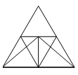

স্থানাঙ্ক সম্পর্ক ও চিত্রভিত্তিক যুক্তি (Spatial Relations, Mirror Images & Clocks)
📊 বিসিএস প্রশ্ন বিশ্লেষণ ছক (স্থানাঙ্ক সম্পর্ক ও চিত্রভিত্তিক যুক্তি)
মোট প্রশ্ন: 38 টি| বিসিএস | প্রশ্ন | বিসিএস | প্রশ্ন | বিসিএস | প্রশ্ন |
|---|---|---|---|---|---|
| ৫০তম বিসিএস | 3 | ৪৭তম বিসিএস | 5 | ৪৬তম বিসিএস | 3 |
| ৪৫তম বিসিএস | 1 | ৪৪তম বিসিএস | 1 | ৪৩তম বিসিএস | 3 |
| ৪১তম বিসিএস | 3 | ৪০তম বিসিএস | 4 | ৩৯তম বিসিএস | 2 |
| ৩৮তম বিসিএস | 3 | ৩৭তম বিসিএস | 3 | ৩৬তম বিসিএস | 3 |
| ৩৫তম বিসিএস | 2 | ৩৪তম বিসিএস | 1 | ২৮তম বিসিএস | 1 |
Part 1
প্রামাণ্য ইন্টারেক্টিভ রিভিশন নোট ও সূত্রাবলি
Authentic Interactive Revision Notes Grounded in BPSC Exam Questions
১. দর্পণ ও জলীয় প্রতিবিম্ব (Mirror & Water Reflection)
• দর্পণ প্রতিবিম্ব (আয়না): ডান \(\leftrightarrow\) বাম পরিবর্তিত হয়, কিন্তু ওপর-নিচ অপরিবর্তিত থাকে।
• ইংরেজি ১১টি অক্ষরের দর্পণ প্রতিবিম্ব অবিকল এক থাকে:
A, H, I, M, O, T, U, V, W, X, Y
• জলীয় প্রতিবিম্ব (পানি): ওপর \(\leftrightarrow\) নিচ উল্টে যায়, কিন্তু ডান-বাম ঠিক থাকে।
• ইংরেজি ১১টি অক্ষরের দর্পণ প্রতিবিম্ব অবিকল এক থাকে:
A, H, I, M, O, T, U, V, W, X, Y
• জলীয় প্রতিবিম্ব (পানি): ওপর \(\leftrightarrow\) নিচ উল্টে যায়, কিন্তু ডান-বাম ঠিক থাকে।
২. ঘড়ির কাঁটার মধ্যবর্তী কোণ ও সময় (Clock Angle Formulas)
• ঘণ্টা ও মিনিটের কাঁটার মধ্যবর্তী কোণ সূত্র:
\(\theta = \Big|\frac{11M - 60H}{2}\Big|^\circ\) (যেখানে \(H\) = ঘণ্টা, \(M\) = মিনিট)
• যদি কোণের মান \(180^\circ\)-এর বেশি হয়, তবে \(360^\circ\) থেকে বিয়োগ করতে হবে।
• ঘড়ির দর্পণ প্রতিবিম্ব সময় শর্টকাট: আসল সময়কে \(11:60\) (বা \(23:60\)) থেকে বিয়োগ করতে হবে।
(যেমন: ঘড়িতে ৮:২০ বাজলে আয়নায় দেখাবে \(11:60 - 8:20 = 3:40\))।
\(\theta = \Big|\frac{11M - 60H}{2}\Big|^\circ\) (যেখানে \(H\) = ঘণ্টা, \(M\) = মিনিট)
• যদি কোণের মান \(180^\circ\)-এর বেশি হয়, তবে \(360^\circ\) থেকে বিয়োগ করতে হবে।
• ঘড়ির দর্পণ প্রতিবিম্ব সময় শর্টকাট: আসল সময়কে \(11:60\) (বা \(23:60\)) থেকে বিয়োগ করতে হবে।
(যেমন: ঘড়িতে ৮:২০ বাজলে আয়নায় দেখাবে \(11:60 - 8:20 = 3:40\))।
Part 2
বিগত বছরের প্রামাণ্য প্রশ্নব্যাংক ও ইন্টারঅ্যাক্টিভ কুইজ
Authentic Past Exam Question Engine with Logical Explanations
প্রশ্ন 1
৫০তম বিসিএস
এহসান টেবিলের উপর চায়ের কাপের হ্যান্ডেলটি পূর্বদিকে করে রাখল। সে ঘড়ির কাঁটা যেদিকে ঘোরে সেদিকে চায়ের কাপটি \(\mathrm{১৮০^\circ }\) ঘোরালো। এখন চায়ের কাপের হ্যান্ডলটি থাকবে:
প্রশ্ন 2
৫০তম বিসিএস
এখন জানুয়ারী মাস হলে এখন থেকে ১০০ মাস পর কোন মাস হবে?
প্রশ্ন 3
৫০তম বিসিএস
একটি আয়না থেকে একটি বস্তু আয়নার পৃষ্ঠ থেকে পৃষ্ঠের লম্ব বরাবর সেকেন্ডে ১০ সে.মি. বেগে চলতে শুরু করল। ৪ সেকেন্ড পর বস্তুটি ও তার প্রতিবিম্বের মধ্যে দূরত্ব কত হবে?
প্রশ্ন 4
৪৭তম বিসিএস
পানিতে প্রদত্ত প্রতিচ্ছবিগুলোর সাথে কোনটি ইংরেজিতে একটি শব্দের সাথে সাদৃশ্যপূর্ণ?
প্রশ্ন 5
৪৭তম বিসিএস
একজন ব্যক্তি ৪ মাইল উত্তরে, ১২ মাইল পূর্বে এবং তারপরে ১২ মাইল উত্তরে ভ্রমণ করেন। তিনি শুরুর বিন্দু থেকে কত দূরে আছেন?

প্রশ্ন 6
৪৭তম বিসিএস
পাঁচজন ব্যক্তি গোল হয়ে বসে আছে এবং মাঝখানে তাকিয়ে তাস খেলছে। রাজিবের বামদিকে রয়েছে মুকুল, বিজয় রয়েছে অনিক ও নুরুলের মাঝখানে এবং অনিকের ডান দিকে। তাহলে নুরুলের ডান দিকে কে রয়েছে?

প্রশ্ন 7
৪৭তম বিসিএস
হাত, চোখ ও মস্তিষ্কের কার্যাবলি এতটাই ____ যে শৈশব কালের প্রথম দিকে হাতের ব্যবহার সম্পূর্ণ ____ বিকাশকে ত্বরান্বিত করতে সাহায্য করে। উপরের ফাঁকা যায়গাগুলো নিম্নে উল্লিখিত জোড়াশব্দ দিয়ে পূরণ করুন।
প্রশ্ন 8
৪৭তম বিসিএস
পৃথিবীর কক্ষপথের বিভিন্ন বিন্দু থেকে দেখলে কোন ঘটনার কারণে একটি নক্ষত্রের অবস্থানের আপাত পরিবর্তন ঘটে?
প্রশ্ন 9
৪৬তম বিসিএস
একজন লোক উত্তর-পশ্চিম দিকে মুখ করে আছে। সে ঘড়ির কাঁটার দিকে ৯০° ঘুরে, তারপরে ঘড়ির কাঁটার বিপরীত দিকে ১৮০° ঘুরে এবং তারপর একই দিকে আরো ৯০° ঘুরে। এখন সে কোন দিকে মুখ করে আছে?
প্রশ্ন 10
৪৬তম বিসিএস
একটি ছবিতে একজন পুরুষের দিকে ইঙ্গিত করে একজন মহিলা বলেন, “তার ভাইয়ের বাবা আমার দাদার একমাত্র ছেলে।” ছবির পুরুষের সঙ্গে উক্ত মহিলার সম্পর্ক কী?
প্রশ্ন 11
৪৬তম বিসিএস
‘Ubiquitous’ সমার্থক শব্দ কোনটি চিহ্নিত করুন।
প্রশ্ন 12
৪৫তম বিসিএস
ROSE এর আয়নায় প্রতিবিম্ব কোনটি হবে?
প্রশ্ন 13
৪৪তম বিসিএস
‘MEMORY’ শব্দটির আয়নার প্রতিবিম্ব কোনটি?
প্রশ্ন 14
৪৩তম বিসিএস
নিচের কোন শব্দটি ভিন্ন ধরনের?
প্রশ্ন 15
৪৩তম বিসিএস
এক ব্যক্তি ৫ মাইল পশ্চিমে, ২ মাইল দক্ষিণে, এর পর আবার ৫ মাইল পশ্চিমে যায়। যাত্রাস্থান থেকে তার সরাসরি দূরত্ব কত?
প্রশ্ন 16
৪৩তম বিসিএস
একটি ছবি দেখিয়ে তিন্নী বললো, ‘সে আমার দাদার একমাত্র ছেলের ছেলে’ ছবির ছেলেটির সাথে তিন্নীর সম্পর্ক কী?
প্রশ্ন 17
৪১তম বিসিএস
ঘড়ি : কাঁটা :: থার্মোমিটার : ?
প্রশ্ন 18
৪১তম বিসিএস
রহিম উত্তর দিকে ১০ মাইল হেঁটে ডানদিকে ঘুরে ৫ মাইল হাঁটেন। তারপর ডানদিকে ঘুরে ২ মাইল হাঁটেন। তিনি কোন দিকে হাঁটছেন?
প্রশ্ন 19
৪১তম বিসিএস
‘RELATION’- এর আয়নায় প্রতিবিম্ব কোনটি হবে?
প্রশ্ন 20
৪০তম বিসিএস
বাংলা ‘ব্যঞ্জনবর্ণ’- মালায় ‘ম’ অক্ষরটির পূর্বের পঞ্চম অক্ষরটি কী?
প্রশ্ন 21
৪০তম বিসিএস
‘UNICEF’ এর আয়নায় প্রতিবিম্ব কোনটি হবে?
প্রশ্ন 22
৪০তম বিসিএস
যদি চ × G = ৪২ হয় তবে J × ট =?
প্রশ্ন 23
৪০তম বিসিএস
একজন ব্যক্তি ভ্রমণে ৪ মাইল উত্তরে, ১২ মাইল পূর্বে, তারপর আবার ১২ মাইল উত্তরে যায়। সে শুরুর স্থান থেকে কত মাইল দূরে?
প্রশ্ন 24
৩৯তম বিসিএস
একজন লোক A অবস্থান থেকে হেঁটে ডান দিকে ১০ ফুট, অতঃপর বামদিকে ২০ ফুট, তারপর বামদিকে ২০ ফুট এবং সবশেষে বামদিকে ২০ ফুট গিয়ে B অবস্থানে পৌঁছাল। A ও B এর মধ্যকার দূরত্ব কত ফুট?
প্রশ্ন 25
৩৯তম বিসিএস
ঘড়িতে যখন ৮টা বাজে তখন ঘণ্টার কাঁটা ও মিনিটের কাঁটার মধ্যবর্তী কোণ কত ডিগ্রি হবে?
প্রশ্ন 26
৩৮তম বিসিএস
‘UNFARE’- এর আয়নায় দেখলে তার সঠিক রূপটি হবে-
প্রশ্ন 27
৩৮তম বিসিএস
নিম্নের চারটির মধ্যে কোনটি ভিন্ন?
প্রশ্ন 28
৩৮তম বিসিএস
একজন লোক একটি নির্দিষ্ট স্থান A থেকে যাত্রা শুরু করে ১২ কিলোমিটার উত্তর দিকে গেল এবং সেখান থেকে ৫ কিলোমিটার পূর্ব দিকে গেল। যাত্রা শেষে সে A অবস্থান থেকে কত দূরে থাকবে?
প্রশ্ন 29
৩৭তম বিসিএস
ভোর বেলায় আপনি বেড়াতে বের হয়েছেন। বের হওয়ার সময় সূর্য আপনার সামনে ছিল। কিছুক্ষণ পরে আপনি বামদিকে ঘুরলেন, কয়েক মিনিট পরে আপনি ডানদিকে ঘুরলেন। এখন আপনার মুখ কোনদিকে?
প্রশ্ন 30
৩৭তম বিসিএস
কোনো নৌকাকে বেশি গতিতে চালাতে হলে, বৈঠা ব্যবহার করতে হবে-
প্রশ্ন 31
৩৭তম বিসিএস
Find out the correct synonym of ‘TENUOUS’–
প্রশ্ন 32
৩৬তম বিসিএস
ইংরেজি বর্ণমালার ধারাবাহিকভাবে ১৮তম অক্ষরের বামদিকে ১০ম অক্ষর কোনটি?
প্রশ্ন 33
৩৬তম বিসিএস
আয়নায় প্রতিফলিত হলে নিচের কোন শব্দটির কোন পরিবর্তন হবে না?
প্রশ্ন 34
৩৬তম বিসিএস
আয়না থেকে ২ ফুট দূরত্বে দাঁড়িয়ে, আয়নাতে আপনার প্রতিবিম্ব কতদূর দেখা যাবে?
প্রশ্ন 35
৩৫তম বিসিএস
সঠিক উত্তর কোনটি? ___ ছাড়া রোগ প্রতিরোধ করা অসম্ভব।
প্রশ্ন 36
৩৫তম বিসিএস
নিচের চিত্রে মোট কয়টি ত্রিভুজ আছে?

প্রশ্ন 37
৩৪তম বিসিএস
ঘড়িতে এখন ৮টা বাজে। ঘণ্টার কাঁটা ও মিনিটের কাঁটার মধ্যকার কোণটি হলো -
প্রশ্ন 38
২৮তম বিসিএস
Break : Repair : : Wound: